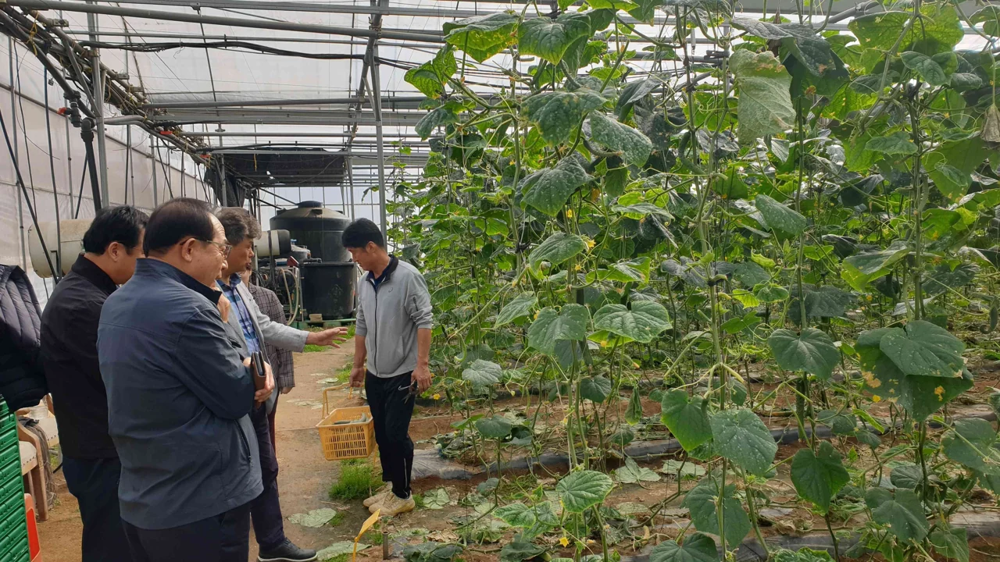

스마트팜 오이 재배교육｜진천 3명 배정과 교육 전 데이터 준비

오이 재배 현장 방문 참고 사진. 12월 교육·견학 장소의 사진은 아닙니다.
진천군 안내 기준 스마트팜 오이 재배 기술교육 신청은 12월 3일까지, 진천군민 3명 선착순입니다. 충북 전체 교육 정원 30명과 우리 지역 배정 인원을 구분하고, 이틀 모두 참석할 수 있는지 먼저 확인하세요.
접수는 주소지 시군 기준으로 확인합니다
진천 신청은 농업기술센터 교육 담당 043-539-7524로 안내돼 있습니다. 평일 업무시간에 접수하며 점심시간·공휴일은 제외됩니다. 다른 시군은 배정 인원과 자체 접수 기한이 다를 수 있습니다. 단순 신청과 교육생 확정은 구분하고 안내 문자를 확인하세요.
12월 17~18일, 구축·데이터·현장을 연결합니다
첫날은 스마트팜 구축과 운영, 데이터 활용, 수집·시공 사례를 다룹니다. 둘째 날은 운영 사례와 아산 수확의 정석 현장견학이 포함됩니다. 기본 집결 장소는 청주 오창의 충북농업기술원 농업인회관입니다. 교육계획은 당일 09:40까지 참석, 교육시간 80% 미만 참석 시 미수료로 안내합니다. 이동과 농장 대체 작업자를 미리 준비하세요.
| 날짜 | 교육 내용 | 가져갈 질문 |
|---|---|---|
| 12/17 | 구축·운영·데이터·시공 | 센서 위치/교정/유지비 |
| 12/18 오전 | 오이 운영 사례 | 작기·품종·재배방식 차이 |
| 12/18 오후 | 현장견학·특강 | 수동 전환/고장 대응/기록 |
| 교육 후 | 우리 농장 적용 항목 선정 | 바꾸기 전후 지표 1~2개 |
교육에서 물어볼 질문을 데이터로 만듭니다
최근 온습도, 관수 시작·종료, 배액 또는 토양 수분 측정, 수확량과 이상 증상을 같은 날짜로 묶어보세요. 센서 설치 위치와 단위가 다르면 수치끼리 바로 비교하기 어렵습니다. 기록이 없다면 매일 같은 시각에 관찰한 간단한 표부터 가져가도 됩니다. 교육 내용을 우리 시설에 적용할 때는 설비 사양과 작기 차이를 함께 봐야 합니다.
새 장비보다 측정의 신뢰도를 먼저 묻습니다
센서 교정·청소 주기, 통신 끊김 알림, 수동 운전 전환, 데이터 내보내기와 유지보수 비용을 질문하세요. 다른 농장의 제어값을 그대로 복사하기보다 왜 그 값을 썼는지 확인하는 편이 실제 적용에 도움이 됩니다. 교육 참석이 장비 구매 보조나 사업 선정으로 이어진다는 안내는 없습니다.
작업 전 점검표
- 주소지 배정과 접수 완료 여부를 확인했다
- 09:40 도착과 이틀 농장 관리 인력을 확보했다
- 현재 시설·관수·센서 자료를 준비했다
교육 전에 질문을 세 개 적고, 교육 후에는 한 가지 변화부터 기록하며 적용해 보세요.